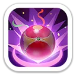
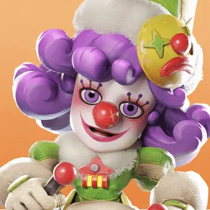
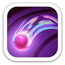
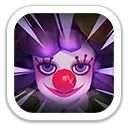
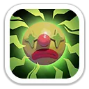
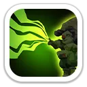
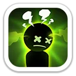
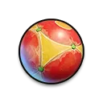
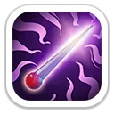
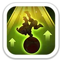

Облако иллюзий
Разноцветный шар взрывается и наносит врагам по площади 100%/110%/120%/130%/140% атаки. Цели дезориентируются на 1 секунду и могут атаковать всех вокруг, включая своих.

Метки грёз · усиление урона копейщиков · контроль на Арене
Рене — мифический герой копейщиков 6 поколения и герой Колеса удачи. Её Освоение построено вокруг дезориентации и Звёздной метки, а Экспедиция — вокруг Меток грёз: они создают мощные всплески урона копейщиков и усиливают урон всей армии по отмеченной цели.
Максимальные значения героя для 6 поколения.
Навыки, которые работают в Освоении и на Арене.

Разноцветный шар взрывается и наносит врагам по площади 100%/110%/120%/130%/140% атаки. Цели дезориентируются на 1 секунду и могут атаковать всех вокруг, включая своих.

Наносит 50%/55%/60%/65%/70% атаки и оставляет Звёздную метку. Отмеченная цель получает на 2%/3%/4%/5%/6% больше урона в течение 4 секунд.

Повышает атаку Рене на 8%/12%/16%/20%/24% и увеличивает её урон по целям со Звёздной меткой на 4%/6%/8%/10%/12%.
Основная связка Рене в маршах и сборах строится вокруг Меток грёз.

Раз в 2 хода копейщики Рене ставят цели Метку грёз. На следующем ходу она один раз добавляет 40%/80%/120%/160%/200% урона копейщиков. Метка действует 1 ход.
Важно: актуальная механика 2026 года — раз в 2 хода.

Метки грёз подсвечивают уязвимости противника и увеличивают урон копейщиков по отмеченным целям на 30%/60%/90%/120%/150%.

Увеличивает урон всех типов войск по целям с Меткой грёз на 15%/30%/45%/60%/75%. Именно этот навык делает Рене полезной не только в чисто копейщицкой армии.

Максимальные характеристики: +1 201 атаки героя · +1 201 защиты · +12 015 здоровья · +133.5% смертоносности · +133.5% здоровья войск.


Сильный контроль через дезориентацию, AoE и связку Звёздной метки с усилением урона.
Особенно хороша в более длинных боях, где Метки грёз успевают повторно сработать.
Лучший сценарий для её полного набора: работают все три походных навыка и бонус снаряжения к смертоносности сбора.
Не является автоматической заменой Мии: два ключевых усиления Рене завязаны на копейщиков, тогда как типичная медвежья армия ориентирована на стрелков. Как присоединяющийся герой тоже не приоритет.
Рене — главный F2P-герой 6 поколения. Для большинства игроков Колесо удачи делает её самым разумным вложением поколения: она заметно усиливает копейщиков, хорошо работает на Арене и становится особенно опасной как лидер затяжного PvP-сбора. Для Медведя её не стоит автоматически ставить вместо Мии.